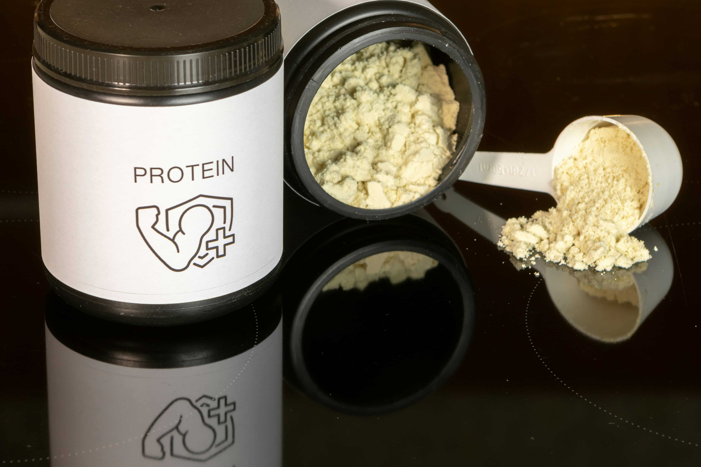

Proteína sin volverse loco: cuánta necesitas para perder grasa sin perder músculo

Voy directo: si entrenas fuerza y no comes suficiente proteína, estás trabajando para perder músculo. No mañana. Ahora.
No hace falta pesar la comida ni vivir a base de batidos. Hace falta entender lo justo y hacerlo de forma sostenible.
El error más común
“Como normal”. “No como tanto”. “No quiero pasarme con la proteína”.
Traducción: comes poca proteína y mal repartida. Luego entrenas fuerza y el cuerpo, sin material, recorta músculo.
Cuánta proteína necesitas de verdad
Para perder grasa sin perder músculo, el rango sensato es:
1,6 – 2,0 g de proteína por kilo de peso corporal y día
- 70 kg → 110–140 g
- 80 kg → 125–160 g
- 90 kg → 145–180 g
No es una cifra inventada. Es el rango que aparece de forma consistente cuando hay déficit calórico y entrenamiento de fuerza[1].
El segundo error: meterlo todo en una comida
Muy típico en ayuno intermitente: café por la mañana, comida floja y “ya por la noche meto proteína”.
Resultado: pasas muchas horas sin estímulo proteico. El músculo no entiende de intenciones, entiende de señales.
Regla simple: 3–4 tomas al día con 25–40 g cada una.
Proteína con comida normal
- 2 huevos → 12 g
- Yogur griego natural → 10 g
- 150 g pollo/pavo → 30–35 g
- Lata de atún → 25 g
- Legumbres cocidas (200 g) → 15 g
No necesitas productos raros. Necesitas combinar.
¿Batidos sí o no?
No son obligatorios. Son una herramienta.
Sí ayudan si te cuesta llegar con comida. No sirven si los usas como excusa para no comer bien.
Proteína y fuerza: inseparables
La fuerza es la señal. La proteína es el material.
Si aún no lo has leído, aquí tienes la rutina base:
Rutina de fuerza en casa 3 días (full body) para gente normal
Y si ya te mueves bastante, mejor todavía. Lo conté aquí:
Movimiento diario: del sofá a sumar kilómetros
Con los años, el músculo cuesta más mantenerlo. No es una condena, es una adaptación.
No necesitas comer más. Necesitas comer mejor repartido y entrenar fuerza.
Resumen claro
- 1,6–2,0 g/kg/día
- 3–4 tomas
- Comida normal
- Batido solo si ayuda
- Fuerza imprescindible
Lo fácil no falla.
Notas y lecturas recomendadas
- Morton RW et al. (2018). A systematic review and meta-analysis of protein supplementation on muscle mass and strength
- Devries MC et al. (2018). Protein intake and kidney function in healthy adults
- Phillips SM (2014). A brief review of higher dietary protein diets in weight loss